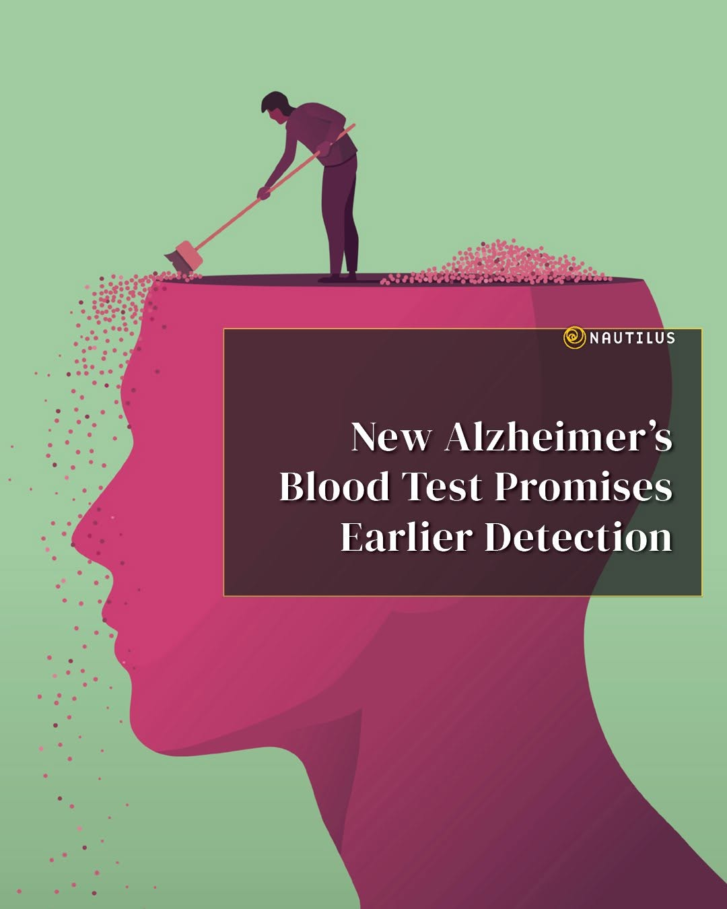

This blood test for early detection of Alzheimer’s is a game changer.
“For years, researchers have sought a simple blood test for Alzheimer's, and the FDA approved one in
2025. By analyzing the ratio of pTau217/B-Amyloid 1-42-two malformed proteins that build up in the neural tissue of Alzheimer's patients-the test can give doctors an idea of what's going on in the brain without resorting to cumbersome PET scans.
Unfortunately, it's only available to those who are already experiencing symptoms. Now, new research published in Nature Communications is promising to further streamline the process and offer even earlier detection.”
#ptau217HD #alzheimersHD #dementiaHD #bamyloid142HD #mghHD #habsHD #harvardHD
Alzheimer’s is difficult to diagnose and even harder to treat. Until recently, there were no available therapies for the disease, and the two drugs that entered the market late last year promise only to marginally slow its course. That makes early detection an urgent priority for those at risk. Unfortunately, traditional diagnostic tests—a sampling of spinal fluid or a PET scan—can be expensive and difficult to come by.
For years, researchers have sought a simple blood test for Alzheimer’s, and the FDA approved one in 2025. By analyzing the ratio of pTau217/ß-Amyloid 1-42—two malformed proteins that build up in the neural tissue of Alzheimer’s patients—the test can give doctors an idea of what’s going on in the brain without resorting to cumbersome PET scans. Unfortunately, it’s only available to those who are already experiencing symptoms. Now, new research published in Nature Communications is promising to further streamline the process and offer even earlier detection.
Neurologists from Mass General Brigham studied 317 healthy adults between the ages of 50 and 90 pulled from the Harvard Aging Brain Study. The participants were regularly tested for pTau217 levels in their blood and underwent cognitive testing and PET scans to measure amyloid and tau buildup in their brains. The researchers found that higher pTau217 levels not only predicted faster buildup of plaques from both proteins in the brain, it was able to predict them before PET scans became positive.
“What stood out in our study is that even when amyloid scans appear normal in the clinic, the pTau217 biomarker can identify individuals who later become amyloid-positive,” study author Hyun-Sik Yang said in a statement. “It also shows that those with low pTau217 levels are likely to stay amyloid-negative for several years.”
While the test isn’t ready to be rolled out to the public quite yet, the researchers say it can be used to screen participants in clinical trials. Eventually, they hope this simple blood test, or one like it, can be part of routine checkups to push the clock on Alzheimer’s and give patients and their loved ones more time to prepare
